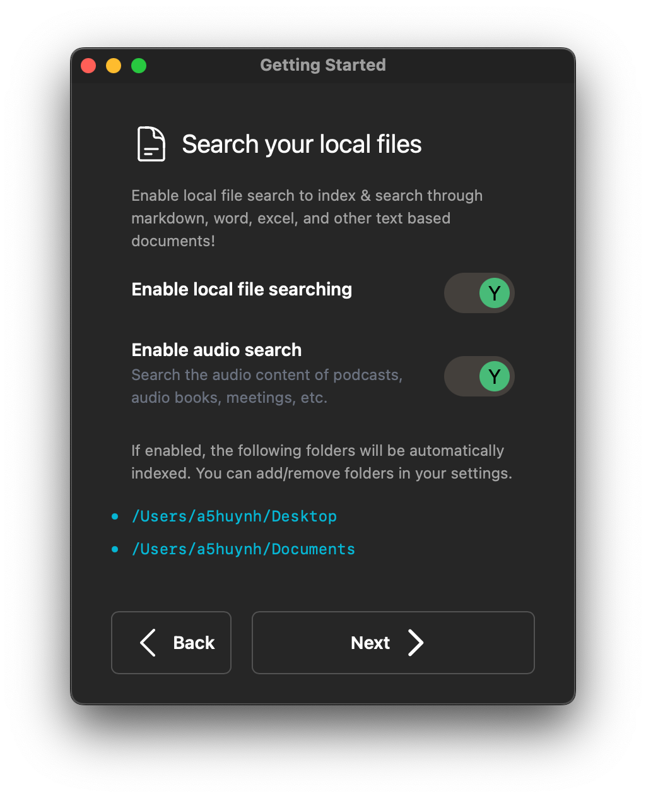
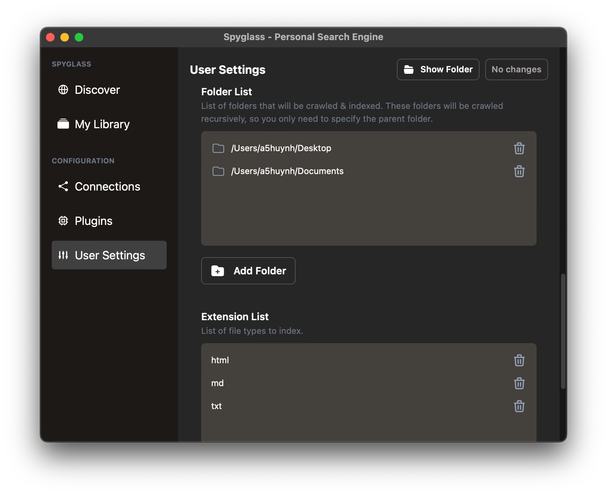

Indexing local files
As you're onbarding you'll see the ability to enable local file searching and audio content indexing as seen below.

File Searching
Local file search will, by default, start with your Desktop and your Documents folder. You can add additional folders in your user settings.
Supported File Formats
Code file supported is rudimentary and things like symbols / class names / function names are not yet taken into account.
Code files:
c,cppjs,tsrs
Configuration / text files are treated as standard text & automatically indexed and searchable.
Config/Text files:
cfgcsvmdtomltxtyaml,yml
Word documents, spreadsheets, and PDFs are also handled automatically their content immediately searchable.
Supported document formats:
docx,odsxls,xlsxpdf
Additional extensions that you'd like to have indexed can be added through the user settings.
Audio Search
If enabled, audio search will automatically transcribe audio from any audio/video file. This is especially handy if you have saved Zoom meetings, audiobooks, or even YouTube content that you'd like to search through!
Supported formats:
aacaviflacm4amp3&mp4oggwavwebm
Adding folders to index
The file indexer plugin will recursively walk through a folder & its' children to find files. Because of this, you'll only need to add the parent folder of what you want to index.
For example, if you want to index all the files under /Users/alice/notes/personal
and /Users/alice/notes/work, you only need to add /Users/alice/notes.
To add folders, navigate to the "User Settings" and scroll down to the Folder List
setting. This takes an array of folder strings as seen below:

Click the "Add Folder" button to choose a folder to add, save your changes, and Spyglass will start indexing the contents immediately!